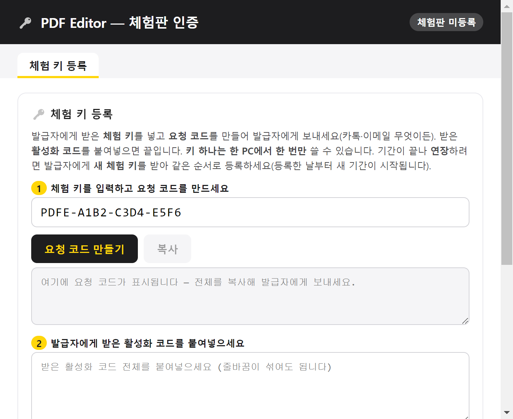
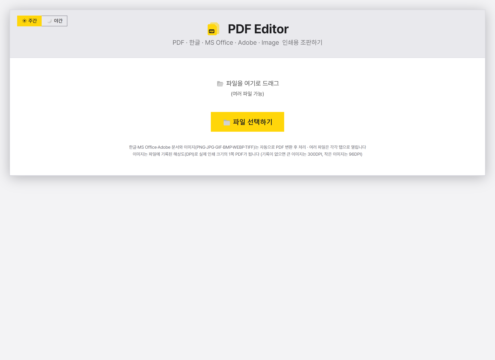
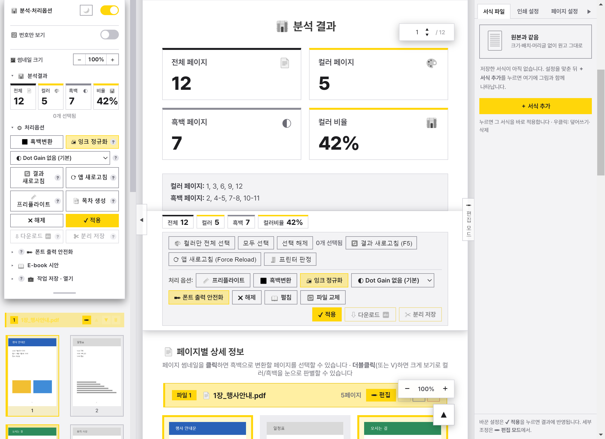
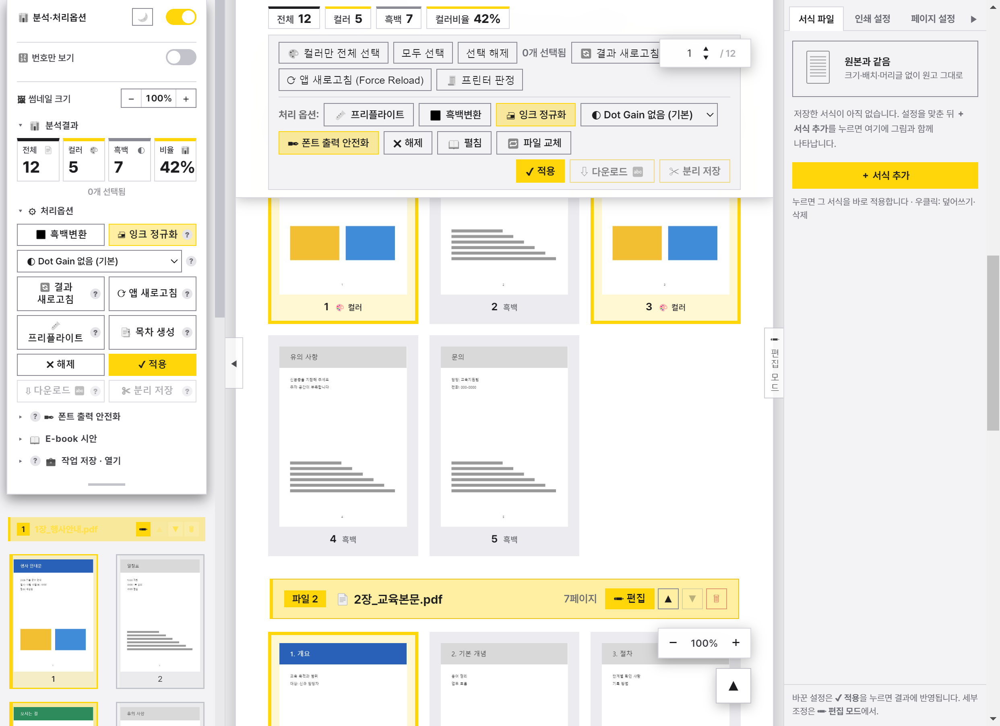
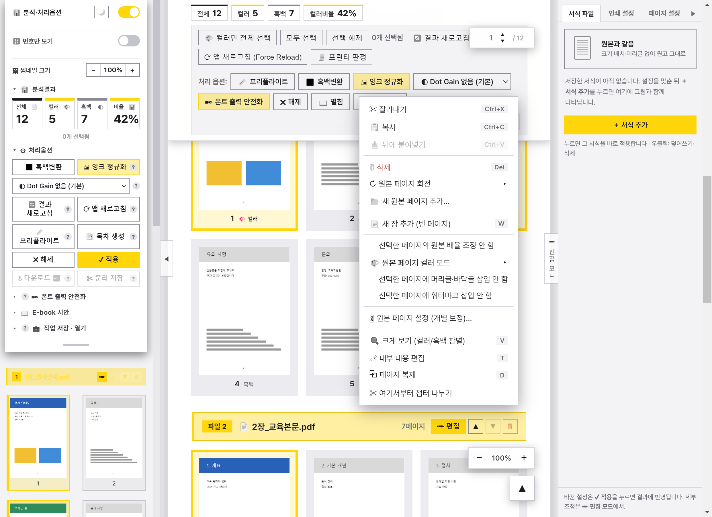
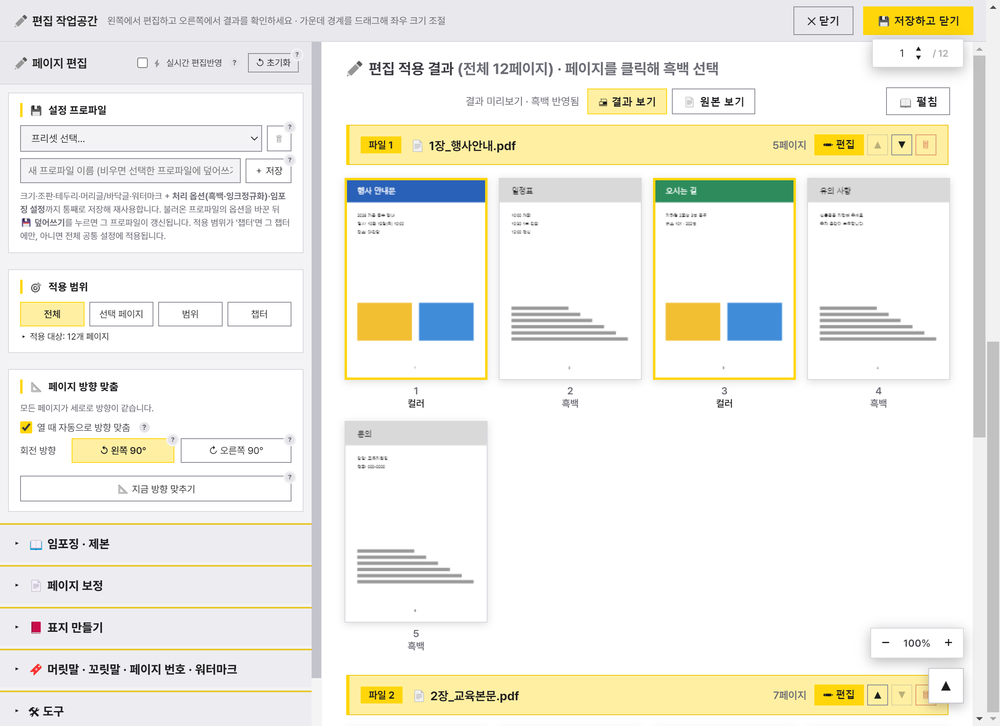
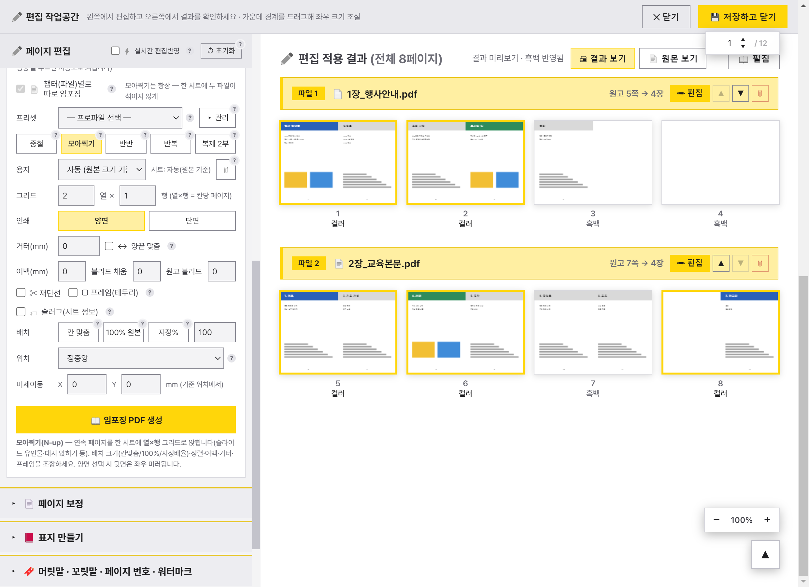
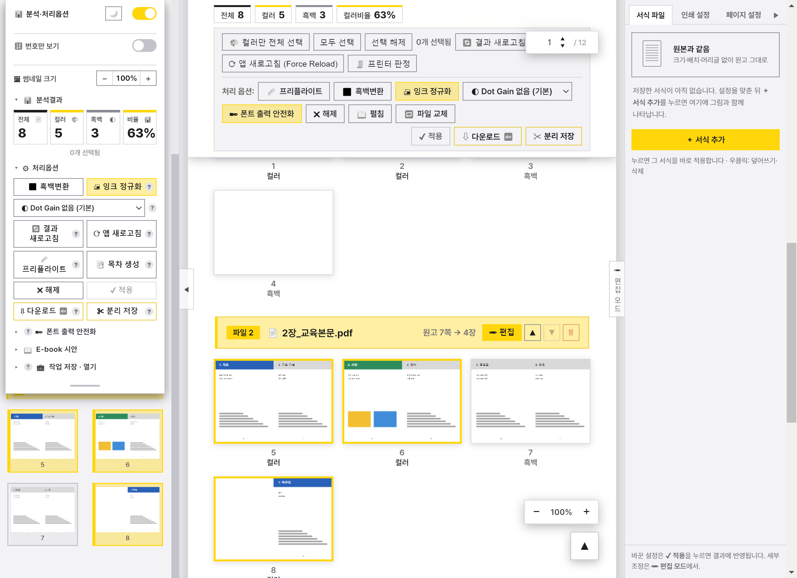

프로그램은 설치가 필요 없는 포터블 형태입니다. 받은 압축 파일을 원하는 위치(예: D:\PDF분석기)에 풀면 됩니다.
처음 실행하면 인증 창이 뜹니다. 받은 체험 키를 넣고 등록합니다. 인증 창은 언제든 Ctrl+Shift+Alt+L 또는 화면의 인증 배지를 눌러 다시 열 수 있습니다.

시작 화면 왼쪽 위의 주간 / 야간 버튼, 또는 왼쪽 패널 머리의 달·해 단추로 화면 밝기를 바꿉니다. 고른 테마는 다음 실행에도 유지됩니다.


| 영역 | 하는 일 |
|---|---|
| 왼쪽 패널 (분석·처리옵션) | 분석 요약(전체·컬러·흑백·비율), 처리 옵션(흑백변환·잉크 정규화·Dot Gain), [✔ 적용]·[⇩ 다운로드]·[✂ 분리 저장], 폰트 출력 안전화, E-book 시안, 작업 저장·열기. 아래에는 쪽 썸네일 목록이 있습니다. S로 접고 폅니다. |
| 가운데 (분석 결과) | 요약 카드, 컬러/흑백 쪽 번호, 빠른 선택 버튼, 페이지별 상세 정보(챕터별 쪽 썸네일). 적용한 뒤에는 결과 시트가 여기에 나옵니다. |
| 오른쪽 빠른 패널 | [서식 파일]·[인쇄 설정]·[페이지 설정] 탭. 자주 쓰는 설정을 서식으로 저장해 한 번에 적용합니다(우클릭: 덮어쓰기·이름 바꾸기·삭제). |
| 오른쪽 끝 [편집 모드] | 크기·여백·임포징 등 세부 편집 작업공간을 엽니다(7장). E로도 엽니다. |
| 쪽 이동 상자·확대 단추 | 오른쪽 위 숫자 상자로 쪽 이동, 오른쪽 아래 −/+로 썸네일 크기를 바꿉니다(Ctrl+[ / ]). |
버튼 옆의 작은 ? 표식에 마우스를 올리면 그 버튼의 자세한 설명이 나옵니다.
여러 파일을 고르면 열 순서 창이 뜹니다. ▲▼나 끌어서 순서를 정하고 합쳐 열기를 누르면 한 문서로 열리고, 파일마다 챕터로 구분됩니다(6장). 따로 열면 파일마다 탭이 생깁니다.
| 형식 | 방법 |
|---|---|
| 그대로 엽니다. | |
| 한글 HWP · HWPX | 한컴오피스로 PDF 변환. 한글의 보안 확인 창은 앱이 변환 중인 파일에 대해서만 자동으로 허용합니다. |
| Word · Excel · PowerPoint | MS Office로 PDF 변환(매크로는 실행하지 않음). |
| AI · PSD · INDD | AI는 바로, PSD는 Photoshop, INDD는 InDesign으로 변환. |
| 이미지 (PNG·JPG·GIF·BMP·WEBP·TIFF) | 파일에 기록된 해상도(DPI)대로 실제 인쇄 크기의 1쪽 PDF로 만듭니다. 기록이 없으면 큰 이미지는 300DPI, 작은 이미지는 96DPI로 봅니다. |
파일을 열면 쪽마다 컬러인지 흑백인지 자동으로 판정합니다. 결과는 왼쪽 패널 요약과 가운데 카드에 같이 나옵니다.
1, 3, 6, 9, 12. 그대로 복사해 견적·작업지시에 씁니다.흑백으로 바꾼 쪽은 사진·글자·도형·투명 효과까지 모두 회색 잉크(DeviceGray)로 다시 만들어 프린터가 흑백으로 셉니다.
| 옵션 | 설명 |
|---|---|
| 잉크 정규화 (기본 켬) | 원래부터 흑백으로 판정된 쪽도 회색 잉크로 정리합니다. 화면에선 흑백인데 프린터가 컬러로 세는 쪽(CMYK로 만든 검정·회색)을 막아 줍니다. 특별한 이유가 없으면 켜 두십시오. |
| Dot Gain (없음·10·15·20%) | 흑백 쪽의 중간 회색을 조금 밝게 해, 인쇄에서 망점이 번져 어두워지는 것을 보정합니다. 켤 때마다 '없음'에서 시작합니다. |
| 프리플라이트 | 저해상도 그림, 포함되지 않은 글꼴, 블리드 부족 등을 미리 검사합니다. |


| 메뉴 | 하는 일 |
|---|---|
| 잘라내기 · 복사 · 뒤에 붙여넣기 · 삭제 | 쪽 단위 편집. Ctrl+X/C/V, Delete. |
| 회전 (오른쪽 90° · 왼쪽 90° · 180°) | R / L. |
| 새 원본 페이지 추가… | 다른 파일의 쪽을 이 위치에 끼워 넣습니다. |
| 새 장 추가 (빈 페이지) | 빈 쪽 한 장을 넣습니다(W). 넣은 챕터의 쪽 수도 함께 바뀝니다. |
| 페이지 복제 | D. |
| 원본 페이지 컬러 모드 | 컬러(C) / 흑백(B). |
| 배율 조정 안 함 · 머리글·바닥글 안 함 · 워터마크 안 함 | 고른 쪽만 편집 모드 설정에서 빼 둡니다(표지·간지 등). |
| 원본 페이지 설정 (개별 보정)… | 그 쪽만 위치·배율·회전을 따로 맞춥니다. |
| 크게 보기 · 내부 내용 편집 | V / T. 내부 편집은 쪽 안의 글자·요소를 직접 고치는 별도 창입니다. |
| 여기서부터 챕터 나누기 | 고른 쪽부터 새 챕터를 시작합니다. |
여러 파일을 합쳐 열면 파일마다 챕터가 됩니다. 챕터 머리줄의 단추로 챕터 단위 작업을 합니다.
잘못 고쳤으면 Ctrl+Z(되돌리기), Ctrl+Y(다시 하기).
화면 오른쪽 끝의 편집 모드(또는 E)를 누르면 작업공간이 열립니다. 왼쪽에서 설정하고 오른쪽에서 결과를 바로 확인합니다. 가운데 경계를 끌어 좌우 폭을 조절합니다.

| 섹션 | 내용 |
|---|---|
| 설정 프로파일 · 최근 작업 설정 | 지금 설정을 이름 붙여 저장하고 불러옵니다. 불러오면 저장된 값으로 모두 바뀝니다. |
| 적용 범위 | 전체 / 선택 페이지 / 범위 / 챕터 중 설정을 적용할 곳. |
| 페이지 방향 맞춤 | 가로 원고를 자동으로 돌려 방향을 맞춥니다. |
| 크기 · 여백 · 제본여백 · 블리드 | 용지 크기·배율, 여백(mm), 제본 쪽 여백, 블리드(재단 여유) 생성. |
| 기울기 · 정렬 · 개별 보정 | 스캔 원고 기울기 보정, 내용 가운데 정렬, 쪽별 개별 보정. |
| 테두리 · 표지 만들기 | 쪽 테두리, 앞·뒤표지와 책등 자동 생성(책등 폭 계산). |
| 머리글·바닥글 · 페이지 번호 · 워터마크 | 문구·글꼴·위치, 쪽 번호 형식, 반투명 워터마크. |
| 조판(모아찍기) · 임포징 | 8장 참고. |
| 내부 내용 편집 | 쪽 안 글자·요소 편집 창을 엽니다. |
편집 모드의 임포징 (제본 조판) 섹션에서 켭니다. 방식을 고르고 용지·그리드·인쇄 면을 정하면 오른쪽에 시트 결과가 나옵니다.

| 방식 | 설명 |
|---|---|
| 중철 | 가운데를 스테이플로 묶는 책자. 쪽 순서를 접지 순서로 자동 배치합니다. 4의 배수가 아니면 빈 쪽을 채웁니다. |
| 모아찍기 | 연속된 쪽을 한 시트에 열×행으로 앉힙니다(슬라이드 유인물 등). 양면이면 뒷면은 좌우 대칭으로 배치합니다. |
| 반반 | 시트를 2·4분할해 인쇄 후 잘라 쌓으면 순서대로 되도록 배치(Cut & Stack). |
| 반복 | 같은 쪽을 시트 가득 반복(명함·스티커 등). |
| 복제 2부 | 한 시트에 같은 쪽 두 부를 앉혀 두 권을 한 번에 찍습니다. |

[✔ 적용]을 누르면 흑백·편집·임포징이 모두 반영된 결과가 가운데에 나옵니다. 결과 화면에서도 챕터 구분선이 유지되며, 구분선의 편집 · ▲▼ · 휴지통으로 챕터를 고치면 자동으로 다시 적용됩니다. 설정을 바꿨는데 화면이 그대로면 F5(결과 새로고침).
[✂ 분리 저장]은 완성본을 N쪽 단위(10·20·대수 16 등) 또는 쪽 범위(21-39, 1-20, 41-60)로 나눠 한 폴더에 저장합니다. 좌클릭은 적용본, 우클릭은 원본입니다. 나눈 파일에는 목차 북마크가 들어가지 않습니다.
인쇄소·출력실에서 글꼴이 바뀌거나 빠지지 않도록 저장할 때 글꼴을 정리합니다.
| 방식 | 설명 |
|---|---|
| 폰트 완전 임베드 | 글꼴을 파일 안에 모두 넣습니다. 빠르고 용량이 작습니다. 권장. |
| 곡선화 | 글자를 도형(윤곽선)으로 바꿉니다. 글꼴 문제는 완전히 없어지지만 시간이 오래 걸리고 용량이 커지며 글자 수정이 안 됩니다. |
| 평탄화 | 투명 효과를 합쳐 구형 출력기에서도 같은 모양이 나오게 합니다. |
다운로드 버튼 옆 abc 표시는 안전화가 켜져 있다는 뜻입니다.
작업 파일은 원본 + 모든 설정 + 적용 결과를 한 파일에 담습니다. 다시 열면 계산 없이 저장할 때 화면 그대로(챕터 구분 포함) 돌아옵니다.
| 동작 | 방법 |
|---|---|
| 저장 (지금 파일에 덮어쓰기) | 왼쪽 패널 [작업 저장] 또는 Ctrl+S |
| 다른 이름으로 저장 | [다른 이름으로 저장] · [작업 저장] 우클릭 · Ctrl+Shift+S |
| 열기 | [작업 열기] · Ctrl+O · .pdfw 더블클릭 |
앱을 닫을 때 저장하지 않은 작업이 있으면 저장 / 다른 이름으로 저장 / 저장 안 함 / 취소를 묻습니다.
| 키 | 동작 |
|---|---|
| V | 크게 보기(컬러/흑백 판별) |
| T | 내부 내용 편집 |
| W | 빈 페이지 추가 |
| D | 페이지 복제 |
| R / L | 오른쪽 / 왼쪽 90° 회전 |
| B / C | 흑백으로 / 컬러로 |
| Delete | 페이지 삭제 |
| S | 왼쪽 패널 접기·펴기 |
| E | 편집 모드 열기·닫기 |
| Esc | 메뉴·크게 보기·편집 모드 닫기 |
| 키 | 동작 |
|---|---|
| ← → | 이전 / 다음 쪽 |
| B | 흑백 지정 켜기·끄기 |
| V · Esc | 닫기 |
| 키 | 동작 |
|---|---|
| Ctrl+C / X / V | 쪽 복사 / 잘라내기 / 뒤에 붙여넣기 |
| Ctrl+Z | 되돌리기 |
| Ctrl+Y · Ctrl+Shift+Z | 다시 하기 |
| Ctrl+[ / ] | 썸네일 작게 / 크게 |
| Ctrl+S | 작업 저장 |
| Ctrl+Shift+S | 다른 이름으로 저장 |
| Ctrl+O | 작업 열기 |
| 키 | 동작 |
|---|---|
| F5 | 결과 새로고침 |
| Ctrl+Shift+R | 앱 새로고침(화면이 이상할 때) |
| Ctrl+Shift+Alt+L | 인증 창 열기 |
한 글자 단축키는 입력 칸에 글을 쓰는 중에는 동작하지 않습니다.
CMYK로 만든 검정·회색(리치블랙)이 원인인 경우가 많습니다. 잉크 정규화를 켜고 그 쪽을 흑백(B)으로 지정한 뒤 적용·저장하십시오. [프린터 판정]으로 저장 전에 프린터 기준 결과를 확인할 수 있습니다.
이 프로그램은 주로 CPU를 씁니다. 코어·스레드가 적은 사무용 PC에서는 3~4배 걸릴 수 있습니다(메모리·디스크 영향은 작습니다). 큰 작업 중에는 다른 무거운 프로그램을 닫아 두십시오. 곡선화는 특히 오래 걸리므로 보통은 폰트 완전 임베드를 쓰십시오.
오류 창에 Ghostscript가 알려 준 원인이 함께 표시됩니다. 그 문구를 담당자에게 전달해 주십시오. 앱 폴더를 옮기면서 resources\gs 폴더가 빠지지 않았는지도 확인하십시오.
한컴오피스가 설치되어 있는지, 한글에 열려 있는 저장 확인 창이 없는지 확인하십시오. 한 번에 한 파일씩 차례로 변환합니다.
F5(결과 새로고침)를 먼저, 그래도 안 되면 Ctrl+Shift+R(앱 새로고침)을 누르십시오. 그 전에 작업 파일로 저장해 두면 안전합니다.
담당자에게 새 키를 받아 인증 창(Ctrl+Shift+Alt+L)에서 등록합니다. 저장해 둔 작업 파일과 설정은 그대로 쓸 수 있습니다.
앱 폴더를 통째로 복사한 뒤 새 PC에서 설치.bat을 한 번 실행하고, 그 PC용 키로 등록합니다.